The Flag Algebra of Rooted Binary Trees
Daniel Brosch
University of Klagenfurt
April 15, 2023

How many copies of a small tree can we fit into a very big tree?
How many copies of a small tree can we fit into a very big tree?

Extremal graph theory
We are interested in limit objects of sequences of graphs $$ \mathcal{G} = (G_i)_{i\geq 0},$$ where $G_i$ is a graph on $i$ vertices.How many edges can there be in a triangle free graph?
Graphons (Graph-functions)
[Lovász, Szegedy, 2006]

Flag Algebras
[Razborov, 2007]

Subgraph densities
We define the (non-induced) density of a finite graph $\color{darkorange}H$ in $\mathcal{G}$ as $$\phi_{\mathcal{G}}({\color{darkorange}H}):= \lim_{i\to\infty} \text{density of $\color{darkorange}H$ in $G_i$}$$$$=\lim_{i\to\infty} \mathbb{P}[{\color{green}\sigma_i}({\color{darkorange}H}) \text{ is a subgraph of }G_i ],$$ where ${\color{green}\sigma_i}\colon V({\color{darkorange}H})\to V(G_i)$ is a random injective mapping.
Triangle free graphs
Maximize the edge density in a triangle free sequence $\mathcal{G}$ of graphs of increasing size:

We saw that

but how can we prove an upper bound?
Multiplying subgraph densities
To multiply two subgraph densities, we glue together the graphs:

These relationships are independent of $\mathcal{G}$, motivating the definition

where a graph $H$ now stands for the function $$\small H(\mathcal{G}) = \phi_{\mathcal{G}}(H)= \lim_{i\to\infty} \mathbb{P}[\sigma_i(H) \text{ is a subgraph of }G_i].$$
We can fix entries of the $\sigma_i$ to fix (flag) some vertices, and extend the gluing operation to partially labeled graphs (flags):
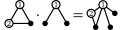Flag Sums-of-Squares
- Flags $F$ send graph sequences to real numbers: $$ F (\mathcal{G}) \in [0,1]$$
-
Then so do real linear combinations of flags
The literature calls these "Quantum graphs". -
Squares of real numbers are nonnegative:
We can average flags over all choices of labels, unlabeling them:
We can now find an upper bound for the edge density in triangle free graphs:
As with polynomial optimization, we can model Flag-SOS using semidefinite programming.
Polynomial Sums-of-Squares
- Let ${\color{darkorange}[x]} = (m_1,\ldots, m_k)^\top$ be a vector containing a finite subset of a basis of $\mathbb{R}{\color{darkorange}[x]}$.
Polynomial Sums-of-Squares
- Let ${\color{darkorange}[x]} = (m_1,\ldots, m_k)^\top$ be a vector containing a finite subset of a basis of $\mathbb{R}{\color{darkorange}[x]}$.
- We can write polynomials in the form $$\small p = \sum_{i=1}^k c_i m_i = c^\top{\color{darkorange}[x]}$$
Polynomial Sums-of-Squares
- Let ${\color{darkorange}[x]} = (m_1,\ldots, m_k)^\top$ be a vector containing a finite subset of a basis of $\mathbb{R}{\color{darkorange}[x]}$.
- We can write polynomials in the form $$\small p = \sum_{i=1}^k c_i m_i = c^\top{\color{darkorange}[x]}$$
- And squares as $$\small p^2 = (c^\top{\color{darkorange}[x]})^2 = {\color{darkorange}[x]}^\top (cc^\top) {\color{darkorange}[x]} = \langle c c^\top, {\color{darkorange}[x]}{\color{darkorange}[x]}^\top\rangle$$
Polynomial Sums-of-Squares
- And squares as $$\small p^2 = (c^\top{\color{darkorange}[x]})^2 = {\color{darkorange}[x]}^\top (cc^\top) {\color{darkorange}[x]} = \langle c c^\top, {\color{darkorange}[x]}{\color{darkorange}[x]}^\top\rangle$$
- Sums-of-squares correspond to PSD matrices: $$\small \sum p_i^2 = \left\langle \sum c_ic_i^\top, {\color{darkorange}[x]}{\color{darkorange}[x]}^\top\right\rangle =\left\langle M, {\color{darkorange}[x]}{\color{darkorange}[x]}^\top\right\rangle,$$ for some $M \in \mathbb{S}^n_+$.
Flag Sums-of-Squares
- Let ${\color{darkorange}\mathcal{F}}$ be a (finite) vector of flags.
Flag Sums-of-Squares
- Let ${\color{darkorange}\mathcal{F}}$ be a (finite) vector of flags.
- Linear combinations of flags are of the form $$f = c^\top {\color{darkorange}\mathcal{F}}.$$
Flag Sums-of-Squares
- Let ${\color{darkorange}\mathcal{F}}$ be a (finite) vector of flags.
- Linear combinations of flags are of the form $$f = c^\top {\color{darkorange}\mathcal{F}}.$$
-
Unlabelled squares can be written as
Flag Sums-of-Squares
- Linear combinations of flags are of the form $$f = c^\top {\color{darkorange}\mathcal{F}}.$$
-
Unlabelled squares can be written as
-
Flag sums-of-squares are of the formfor positive semidefinite matrices $M$.
Flag Sums-of-Squares
-
Flag sums-of-squares are of the formfor positive semidefinite matrices $M$.
In practice: Use "smarter" hierarchies, block diagonalized by combinatorial ideas and/or symmetries.
Graph profiles
We saw that triangle free graphs have at most edge density $\frac{1}{2}$.
What happens if we allow some triangles?
Investigating nonnegativity
Let $p=a_1 G_1 + a_2 G_2 + \ldots + a_k G_k$ be a linear combination of unlabeled graphs.[Lovász, Szegedy 2009]:
If $p\geq 0$, then $p + \varepsilon$ is a SOS for any $\varepsilon > 0$.
[Hatami, Norin, 2011]:
The question "Does $p \geq 0$ hold?"
is undecidable.
Extremal tree theory
Let $\mathcal{T} = (T_i)_{i\geq 0}$ be a sequence of trees, where $T_i$ has $i$ vertices. Let $S$ be a finite tree. $$\phi_{\mathcal{T}}({\color{darkorange}S}):=\lim_{i\to\infty} \mathbb{P}[{\color{green}\sigma_i}({\color{darkorange}S}) \text{ is a subtree of }T_i ] {\color{red}=0}.$$All subtree densities are $0$.
- The induciblity of any tree is zero.
- All profiles of trees are $\{0\}$.
- Deciding nonnegativity of quantum trees is trivial.
The end
The end
?
Scaling limits - compact metric spaces
Scaling limits - compact metric spaces
Still unclear how to define subtree densities.
Sparse limits of trees
[Bubeck, Linial, 2014]
At every $n$, normalize the sum of densities of trees with the same number of vertices to be $1$.
Sparse limits of trees
[Bubeck, Linial, 2014]
-
Profiles of trees with the same number of vertices are convex.
-
It is unclear how to extend flag algebras to this setting.
A change of perspective
[Czabarka, Székely, Wagner, 2017]
What happens, if we only consider the leaves of trees to be the "vertices" of the tree?

(Inner vertices are now part of the "edges" of the tree.)
A change of perspective
[Czabarka, Székely, Wagner, 2017]
Motivation: phylogenetic trees, tanglegrams
Subtrees
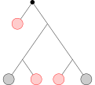Subtrees
$$\Rightarrow$$
Subtrees
$$\Rightarrow$$

Subtrees
$$\Rightarrow$$
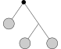
Subtree densities
Let $\mathcal{T} = (T_i)_{i\geq 0}$ be a sequence of trees, where $T_i$ has $i$ leaves. Let $S$ be a finite tree. $$\phi_{\mathcal{T}}({\color{darkorange}S}):=\lim_{i\to\infty} \mathbb{P}[\left.(T_i)\right|_{ {\color{green}V_i}} \cong {\color{darkorange}S}],$$ where $\color{green}V_i$ is a random subset of leaves of $T_i$ of size $V({\color{darkorange}S})$.
Questions
-
What are the inducibilities of trees?
Inducibility of $S:= \max_\mathcal{T}\phi_\mathcal{T}(S)$
Various upper and lower bounds by Wagner et al. -
Are profiles of trees convex?
Open!
The flag algebra of binary rooted trees
 $\equiv 1$
$\equiv 1$
 $\equiv 1$
$\equiv 1$
 $\equiv 1$
$\equiv 1$
 $\equiv 1$
$\equiv 1$
Products of subtree densities
$\cdot$ $\stackrel{?}{=}\large($ $\large)$
$\cdot$ $=$ $+$
Inducibility of small trees
$\leq 1.0$
 $\leq 1.0$
$\leq 1.0$ $\leq 1.0$
$\leq 1.0$ $\leq 0.42857$
$\leq 0.42857$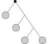 $\leq 1.0$
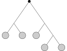 $\leq 0.66667$
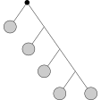 $\leq 1.0$
 $\leq 0.24718$
$\leq 0.24718$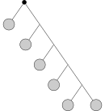 $\leq 1.0$
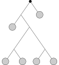 $\leq 0.19166$
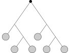 $\leq 0.32258$
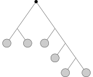 $\leq 0.46875$
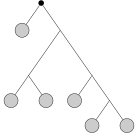 $\leq 0.34121$
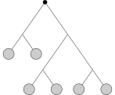 $\leq 0.20738$
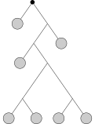 $\leq 0.16972$
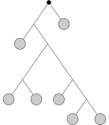 $\leq 0.25593$
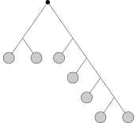 $\leq 0.34568$
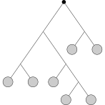 $\leq 0.24722$
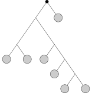 $\leq 0.20864$
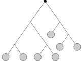 $\leq 0.2381$
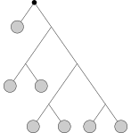 $\leq 0.10488$
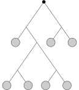 $\leq 0.08879$
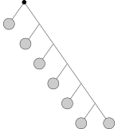 $\leq 1.0$
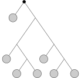 $\leq 0.14409$
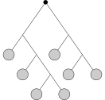 $\leq 0.54688$
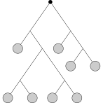 $\leq 0.10891$
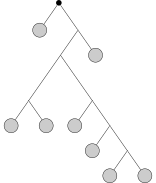 $\leq 0.15392$
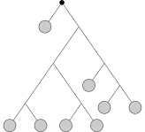 $\leq 0.10069$
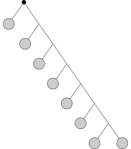 $\leq 1.0$
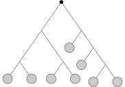 $\leq 0.13499$
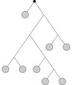 $\leq 0.13142$
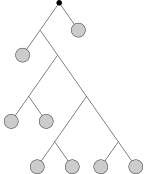 $\leq 0.07846$
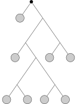 $\leq 0.04778$
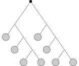 $\leq 0.27344$
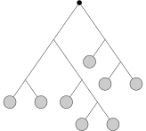 $\leq 0.29397$
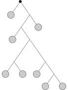 $\leq 0.22385$
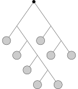 $\leq 0.4375$
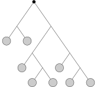 $\leq 0.10921$
$\leq 0.05062$
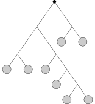 $\leq 0.14794$
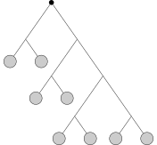 $\leq 0.07021$
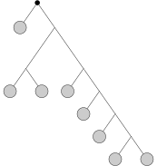 $\leq 0.15873$
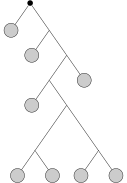 $\leq 0.15785$
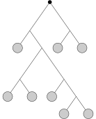 $\leq 0.11242$
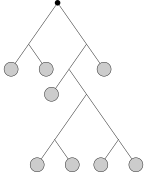 $\leq 0.0618$
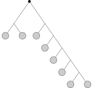 $\leq 0.3156$
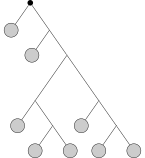 $\leq 0.1106$
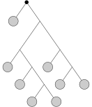 $\leq 0.21818$
$\leq 0.07672$
$\leq 0.05459$
$\leq 0.32813$
$\leq 0.07269$
$\leq 0.16773$
$\leq 0.14118$
$\leq 0.03742$
$\leq 0.06838$
$\leq 0.0546$
$\leq 0.06361$
$\leq 0.06572$
$\leq 0.06916$
$\leq 0.09701$
$\leq 0.10656$
$\leq 0.05395$
$\leq 0.1674$
$\leq 0.30674$
$\leq 0.15159$
$\leq 0.04657$
$\leq 0.19236$
 $\leq 0.15381$
$\leq 0.15381$$\leq 0.10694$
$\leq 0.03393$
 $\leq 0.09637$
$\leq 0.09637$$\leq 0.02046$
$\leq 0.08361$
$\leq 0.03807$
$\leq 0.12347$
$\leq 0.11441$
$\leq 0.49219$
$\leq 0.07703$
 $\leq 0.20609$
$\leq 0.20609$$\leq 0.09881$
$\leq 0.15142$
$\leq 0.11154$
 $\leq 0.13361$
$\leq 0.13361$$\leq 0.0417$
$\leq 0.06798$
$\leq 1.0$
$\leq 0.03665$
$\leq 0.03196$
$\leq 0.12142$
$\leq 0.17236$
$\leq 0.04644$
$\leq 0.10636$
Irrational inducibility?
[Dossou-Olory, Wagner, 2019]:$0.247071\leq$
$\leq 0.24745$Irrational inducibility?
[Dossou-Olory, Wagner, 2019]:$0.247071\leq$
$\leq{\color{red} 0.24718}\leq
0.24745$Outer approximation of tree profiles
Outer approximation of tree profiles
For ${\color{darkorange}S}=$ and ${\color{green}T}=$ :Outer approximation of tree profiles
Open questions
- Is the question "Is a linear combination of trees nonnegative?" decidable?
-
Is the inducibility of irrational?
- Can we define limit objects in the form of "Tree-ons"?